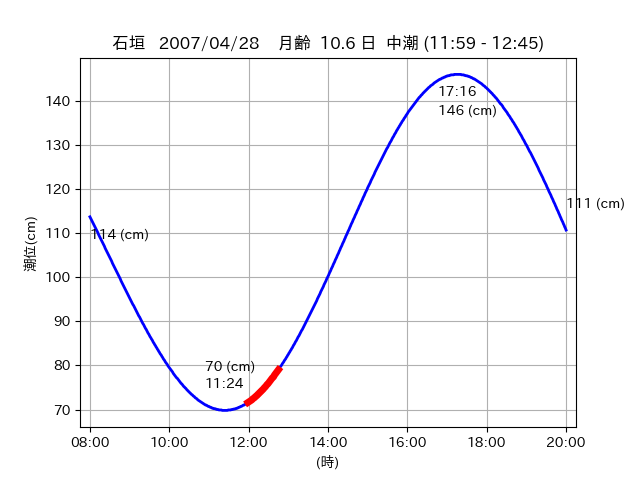

<!DOCTYPE html>
<html>
<head>
    
    <meta http-equiv="content-type" content="text/html; charset=UTF-8" />
    
        <script>
            L_NO_TOUCH = false;
            L_DISABLE_3D = false;
        </script>
    
    <style>html, body {width: 100%;height: 100%;margin: 0;padding: 0;}</style>
    <style>#map {position:absolute;top:0;bottom:0;right:0;left:0;}</style>
    <script src="https://cdn.jsdelivr.net/npm/leaflet@1.9.3/dist/leaflet.js"></script>
    <script src="https://code.jquery.com/jquery-3.7.1.min.js"></script>
    <script src="https://cdn.jsdelivr.net/npm/bootstrap@5.2.2/dist/js/bootstrap.bundle.min.js"></script>
    <script src="https://cdnjs.cloudflare.com/ajax/libs/Leaflet.awesome-markers/2.0.2/leaflet.awesome-markers.js"></script>
    <link rel="stylesheet" href="https://cdn.jsdelivr.net/npm/leaflet@1.9.3/dist/leaflet.css"/>
    <link rel="stylesheet" href="https://cdn.jsdelivr.net/npm/bootstrap@5.2.2/dist/css/bootstrap.min.css"/>
    <link rel="stylesheet" href="https://netdna.bootstrapcdn.com/bootstrap/3.0.0/css/bootstrap-glyphicons.css"/>
    <link rel="stylesheet" href="https://cdn.jsdelivr.net/npm/@fortawesome/fontawesome-free@6.2.0/css/all.min.css"/>
    <link rel="stylesheet" href="https://cdnjs.cloudflare.com/ajax/libs/Leaflet.awesome-markers/2.0.2/leaflet.awesome-markers.css"/>
    <link rel="stylesheet" href="https://cdn.jsdelivr.net/gh/python-visualization/folium/folium/templates/leaflet.awesome.rotate.min.css"/>
    
            <meta name="viewport" content="width=device-width,
                initial-scale=1.0, maximum-scale=1.0, user-scalable=no" />
            <style>
                #map_ff64f7b6672739d01a982a6e06dcd6f4 {
                    position: relative;
                    width: 2048.0px;
                    height: 1600.0px;
                    left: 0.0%;
                    top: 0.0%;
                }
                .leaflet-container { font-size: 1rem; }
            </style>
        
</head>
<body>
    
    
            <div class="folium-map" id="map_ff64f7b6672739d01a982a6e06dcd6f4" ></div>
        
</body>
<script>
    
    
            var map_ff64f7b6672739d01a982a6e06dcd6f4 = L.map(
                "map_ff64f7b6672739d01a982a6e06dcd6f4",
                {
                    center: [24.245, 124.102],
                    crs: L.CRS.EPSG3857,
                    ...{
  "zoom": 12,
  "zoomControl": true,
  "preferCanvas": false,
}

                }
            );

            

        
    
            var tile_layer_e17580877976c5e60a85b5d1b4db30db = L.tileLayer(
                "https://cyberjapandata.gsi.go.jp/xyz/seamlessphoto/{z}/{x}/{y}.jpg",
                {
  "minZoom": 0,
  "maxZoom": 18,
  "maxNativeZoom": 18,
  "noWrap": false,
  "attribution": "\u5730\u7406\u9662\u5730\u56f3",
  "subdomains": "abc",
  "detectRetina": false,
  "tms": false,
  "opacity": 1,
}

            );
        
    
            tile_layer_e17580877976c5e60a85b5d1b4db30db.addTo(map_ff64f7b6672739d01a982a6e06dcd6f4);
        
    
            var marker_f6f03c40008711357e5e91ca2ab04c1e = L.marker(
                [24.2188, 123.9977],
                {
}
            ).addTo(map_ff64f7b6672739d01a982a6e06dcd6f4);
        
    
            var icon_1393b47992005c566ad6e4ae7c6255cf = L.AwesomeMarkers.icon(
                {
  "markerColor": "orange",
  "iconColor": "white",
  "icon": "info-sign",
  "prefix": "glyphicon",
  "extraClasses": "fa-rotate-0",
}
            );
        
    
        var popup_f31e45e82704285ed0e6f8dd58c7bbf4 = L.popup({
  "maxWidth": "100%",
});

        
            
                var html_53dbd281ca09930d30e282a7121e788d = $(`<div id="html_53dbd281ca09930d30e282a7121e788d" style="width: 100.0%; height: 100.0%;"><table><tr><td></td></tr><tr><td><center>20070428 No.1 </center></table></td></tr></table</div>`)[0];
                popup_f31e45e82704285ed0e6f8dd58c7bbf4.setContent(html_53dbd281ca09930d30e282a7121e788d);
            
        

        marker_f6f03c40008711357e5e91ca2ab04c1e.bindPopup(popup_f31e45e82704285ed0e6f8dd58c7bbf4)
        ;

        
    
    
                marker_f6f03c40008711357e5e91ca2ab04c1e.setIcon(icon_1393b47992005c566ad6e4ae7c6255cf);
            
    
            var poly_line_dc4b7c9d27069d1f080389fc63514a77 = L.polyline(
                [[24.2188, 123.9977], [24.2151, 124.0004]],
                {"bubblingMouseEvents": true, "color": "#00FFFF", "dashArray": null, "dashOffset": null, "fill": false, "fillColor": "#00FFFF", "fillOpacity": 0.2, "fillRule": "evenodd", "lineCap": "round", "lineJoin": "round", "noClip": false, "opacity": 1.0, "smoothFactor": 1.0, "stroke": true, "weight": 3}
            ).addTo(map_ff64f7b6672739d01a982a6e06dcd6f4);
        
    
            var marker_389af692d51746d2ef37000cf7b4938d = L.marker(
                [24.2097, 124.0118],
                {
}
            ).addTo(map_ff64f7b6672739d01a982a6e06dcd6f4);
        
    
            var icon_ee3e4dd2a2c626c2f4261633923a3995 = L.AwesomeMarkers.icon(
                {
  "markerColor": "orange",
  "iconColor": "white",
  "icon": "info-sign",
  "prefix": "glyphicon",
  "extraClasses": "fa-rotate-0",
}
            );
        
    
        var popup_41c2c77457d404562ba0ade1058e86da = L.popup({
  "maxWidth": "100%",
});

        
            
                var html_5eda104a86d2132e52a157698dbf2181 = $(`<div id="html_5eda104a86d2132e52a157698dbf2181" style="width: 100.0%; height: 100.0%;"><table><tr><td></td></tr><tr><td><center>20070428 No.2 </center></table></td></tr></table</div>`)[0];
                popup_41c2c77457d404562ba0ade1058e86da.setContent(html_5eda104a86d2132e52a157698dbf2181);
            
        

        marker_389af692d51746d2ef37000cf7b4938d.bindPopup(popup_41c2c77457d404562ba0ade1058e86da)
        ;

        
    
    
                marker_389af692d51746d2ef37000cf7b4938d.setIcon(icon_ee3e4dd2a2c626c2f4261633923a3995);
            
    
            var poly_line_c17a69fc1e95416ec341ebf3829be5da = L.polyline(
                [[24.2097, 124.0118], [24.208, 124.0118]],
                {"bubblingMouseEvents": true, "color": "#00FFFF", "dashArray": null, "dashOffset": null, "fill": false, "fillColor": "#00FFFF", "fillOpacity": 0.2, "fillRule": "evenodd", "lineCap": "round", "lineJoin": "round", "noClip": false, "opacity": 1.0, "smoothFactor": 1.0, "stroke": true, "weight": 3}
            ).addTo(map_ff64f7b6672739d01a982a6e06dcd6f4);
        
    
            var marker_b387811325cca128a7d1deb51e7963d9 = L.marker(
                [24.245, 124.1042],
                {
}
            ).addTo(map_ff64f7b6672739d01a982a6e06dcd6f4);
        
    
            var icon_d11ceddbfb35ce3f4ebe011d73bd2bd1 = L.AwesomeMarkers.icon(
                {
  "markerColor": "orange",
  "iconColor": "white",
  "icon": "info-sign",
  "prefix": "glyphicon",
  "extraClasses": "fa-rotate-0",
}
            );
        
    
        var popup_3f5bc3213edc2cc900546cf821c5b911 = L.popup({
  "maxWidth": "100%",
});

        
            
                var html_aa754a54558d006cc3b84b6a4745459f = $(`<div id="html_aa754a54558d006cc3b84b6a4745459f" style="width: 100.0%; height: 100.0%;"><table><tr><td></td></tr><tr><td><center>20070428 No.3 </center></table></td></tr></table</div>`)[0];
                popup_3f5bc3213edc2cc900546cf821c5b911.setContent(html_aa754a54558d006cc3b84b6a4745459f);
            
        

        marker_b387811325cca128a7d1deb51e7963d9.bindPopup(popup_3f5bc3213edc2cc900546cf821c5b911)
        ;

        
    
    
                marker_b387811325cca128a7d1deb51e7963d9.setIcon(icon_d11ceddbfb35ce3f4ebe011d73bd2bd1);
            
    
            var poly_line_a5394bc8da3b9d4b7f82044531c979b4 = L.polyline(
                [[24.245, 124.1042], [24.2448, 124.0992]],
                {"bubblingMouseEvents": true, "color": "#00FFFF", "dashArray": null, "dashOffset": null, "fill": false, "fillColor": "#00FFFF", "fillOpacity": 0.2, "fillRule": "evenodd", "lineCap": "round", "lineJoin": "round", "noClip": false, "opacity": 1.0, "smoothFactor": 1.0, "stroke": true, "weight": 3}
            ).addTo(map_ff64f7b6672739d01a982a6e06dcd6f4);
        
</script>
</html>